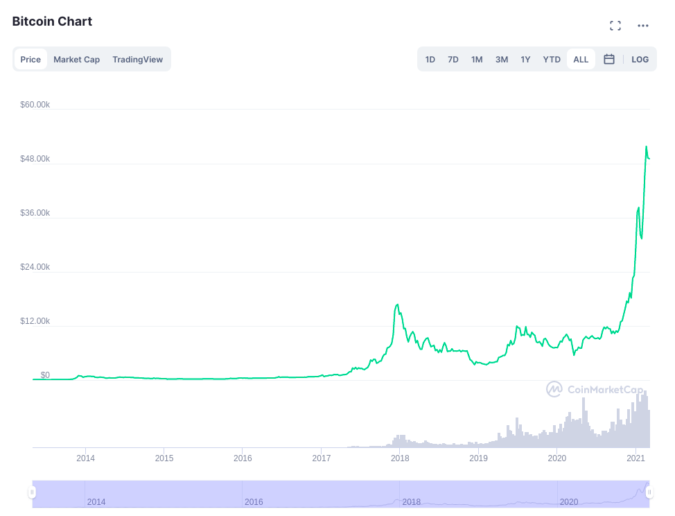
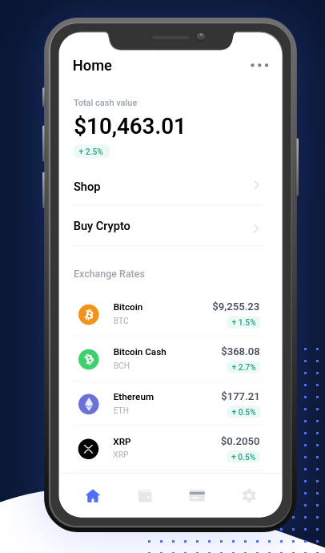
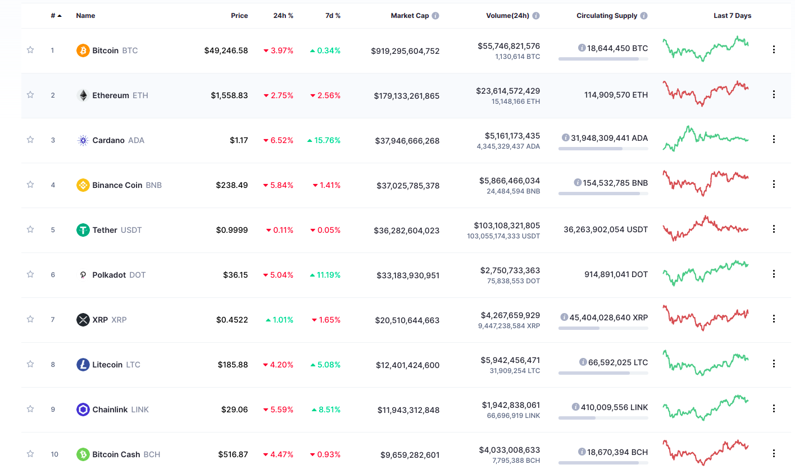

It can be very confusing for a beginner trying to buy Bitcoin so below is a list of questions that are frequently asked about Bitcoin.
Many people like to purchase Bitcoin, keep it and then hope it will worth a lot of fiat currency in the future. The speed and ease of using Bitcoin as a form of payment for items online and offline makes it an ideal payment system alternative to the traditional forms of payment.
To access a Bitcoin wallet you will need a private key and passphrase. Keep this secure at all times. Without this, you will not be able to access your funds. Unlike a tradtional bank where you can reset a password, you cannot reset a private key. If your private key is missing, nobody is able to access it unlike a traditional payment system. Go to this link to create a Bitcoin wallet.
No, all you need is a basic understand of the cryptocurrency payment works.
All Bitcoin transactions are stored in the blockchain which means that it is public but the identity of the person who owns the wallet is not shown publicly.
The price of Bitcoin changes all the time so the market is never really the same. Check graph below of the price history of Bitcoin. 
Most exchanges allow you to sell your Bitcoins. You could also spend them at certain places.
Should you want to purchase an item from anybody or anywhere, ask them if they accept Bitcoin as payment. Certain e-commerce websites have a sign to say they use Bitcoin as a form of payment.
KYC stands for Know Your Customer, this is the law that requires exchanges to have a record of the identity of all their users.
Bitcoin is decentralized and open source which means transactions are stored publicly on the blockchain and everybody has access to the source code. All payments are made without relying on a third party. No person can fully control Bitcoin which means the network is secure.
The money or profits are gone and you will no longer be able to access unless you know the private key or 24 word passphrase.
You are not able to get a discount unless you wait for the price to drop. What you can do is buy half a Bitcoin or much less. Some exchanges allow you to buy Bitcoin for as little as $5 of Bitcoin at a time. Each of unit of Bitcoin is called a Satoshi.
You can buy a GPU and mine for Bitcoin which some people are doing currently. Mining can be quite expensive but should you want to mine Bitcoin then go ahead. It really depends on the country you are in how much electricity it costs to mine Bitcoin. In some countries it is cheaper to trade Bitcoin for profit.
Every transaction is recorded on the blockchain. Check Bitcoin transactional history over here
Yes, Bitcoin is legal. Certain countries have banned the use of Bitcoin. Do a check in your country for the legal status before making a purchase.
Bitcoin is traded on almost every cryptocurrency exchange and has good liquidity. It serves as the "commodity" currency of cryptocurrency.
You should only pay taxes if you earn a profit in fiat currency with the Bitcoin you have traded. This applies to most countries so make sure with the country you currently reside in.
You can earn Bitcoin by performing freelance tasks or selling second items. Buy with items in fiat currency and then sell it for the same price or more in Bitcoin. The price of Bitcoin always increases so either way you will be able to earn a profit.
A whitepaper was released by a person or group by the name of 'Satoshi Nakamoto' with a title of Bitcoin: A Peer-to-Peer Electronic Cash System in a cryptographic mailing list. The Bitcoin software released in 2009 as an open sourced software.
There is no human person who controls the Bitcoin network and their is nobody who owns the Bitcoin technology. It is run by users all around the world on the blockchain.
Quite a good number of businesses and people around the world are accept Bitcoin as form of payment. Doctors, accountants, engineers as well as online businesses just to name a few are accepting Bitcoin.
You can make payment by sending your Bitcoins to another wallet by getting the receivers public key. All you have to do is enter it in and click send. Very few steps to make payment as opposed to traditional forms of payment such as bank EFT and Credit Card. 
On top of the fact that the transactions are stored on the blockchain. There is no physical appearance which makes using Bitcoin more secure. No one particular person or group controls the Bitcoin network.
You can check on a website called coinmarketcap. See below for screenshot. 